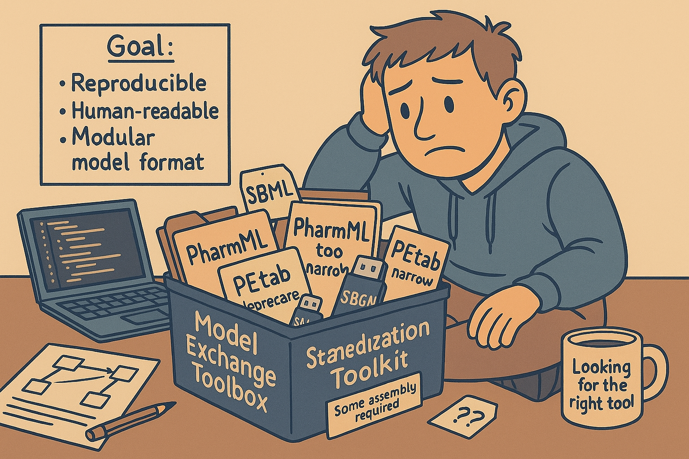

Evgeny Metelkin
2025-11-08

In Part 2, we looked at how engineering principles — transparency, modularity, and automation — can make modeling more reproducible and collaborative. In this part, we turn to the next logical question: if we agree that models should be treated as code, can we agree on how to store and exchange them?
Стандарты в моделировании — это не про «красивые XML». Это про то, чтобы одна и та же модель давала один и тот же результат, чтобы её можно было передать между инструментами и заново запустить через годы без охоты за скрытыми настройками. Сегодня этого часто нет: проекты заперты в .sbproj/.mod/.mlxtran и т.п., логика размазана между GUI, скриптами и «неявными» настройками солвера. В итоге модель, сделанная одной командой, не переезжает к другой, а результаты сложно проверить.
Что именно решают стандарты
Воспроизводимость (reproducibility).
Фиксируем в явном виде: структуру и уравнения, параметры c единицами, сценарии (дозировки, события, горизонты), наблюдаемые, настройки солвера (точности, шаги, алгоритмы), версию окружения и рандом-сиды. Тогда «те же входы → те же выходы» в независимой реализации. Это база для валидации, аудита и регуляторных требований.
Обмен и переносимость (interoperability).
Нужен общий «контракт»: стабильные идентификаторы сущностей (состояния, параметры, события), понятные типы объектов, единицы измерения и аннотации. Тогда модель можно безопасно импортировать в другой инструмент без ручной правки и «угадывания».
Долговечность (longevity).
Текстовый, открытый и проверяемый формат переживёт любой GUI. Пакет с моделью можно архивировать, цитировать, переиспользовать в новых проектах и переоценивать по мере появления данных.
Почему ODE «как универсальный язык» — недостаточно
Сами по себе дифференциальные уравнения — только ядро. На практике к ним привязаны:
Без стандарта для этих слоёв одна и та же «ODE-сущность» ведёт себя по‑разному. Именно здесь сегодня ломается воспроизводимость.
Что ломается без стандарта
Критерии «хорошего» стандарта (проверка на здравый смысл)
Короткий пример
Команда А строит модель в инструменте с визуальным GUI; дозировки и единицы заданы в таблицах проекта, толерансы — в настройках профиля. Команда B пытается воспроизвести в своём стекe: у них другой солвер и по умолчанию другие единицы. Без стандарта они никогда не узнают, что именно не совпало.
С пакетом по стандарту — сценарии, единицы, толерансы и ожидаемые результаты лежат рядом и проверяются автоматически. Разночтения видны сразу, а не после «недели охоты за отличиями».
License: CC-BY-4.0